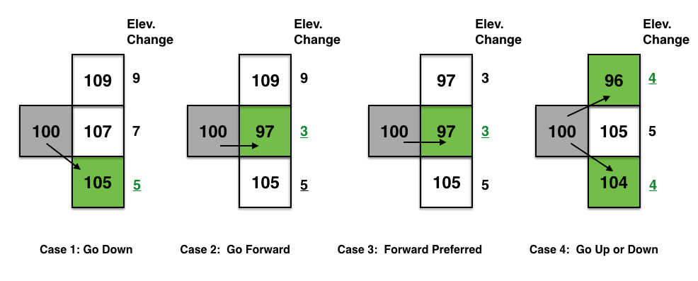

This assignment is adapted from a *Nifty assignment from 2016 proposed by Baker Franke. See *Source
You are given elevation data of a mountainous region in the form of a 2D array of integers (see example image below of one of the datasets). Your goal is to find a path that takes you through the points with the lowest elevation changes, in an effort to minimize the overall effort in walking through the path. For this you will use a `greedy' approach and make local decisions in determining the successive points in the path.
Input gray scale image of a terrain with gray shades mapped to elevation. Elevation ranges from low (dark shades) to high (lighter shades)
The image above shows a mountainous region; lighter regions are higher elevation, and the red line shows the path taken by a walker.

The figure above (reproduced from **Nifty) illustrates 4 different cases for making a decision in determining the next point in the path.
You will use a greedy strategy to determine successive points along the path.
Figure above shows how the algorithm applies the greedy strategy to a pixel (with
grayscale values shown). The algorithm looks to the 3 choices and picks the pixel that
causes the smallest change (least effort to walk). The idea is to start from an edge
of the image (say the leftmost column), then make moves based on the pixels to the right,
each time choosing the pixel that results in the smallest change. Your goal is to reach
the right edge of the image.
get dataset, visualize as an image You will use BRIDGES to define a lat/long range (rectangular bounding box of your choice) to access the elevation data (returned in an object containing the elevation values). You will need to calculate maximum elevation value, as you will need to scale the values to the (0-255) range to display the image in a ColorGrid. (Backup plan is to read from a PPM image, if there are any issues accessing data from an external source)
Display the image using BRIDGES. Once you have acquired the dataset, scale the values to 0-255 range and convert that to an integer (divide each value by the largest and scale to 255). Use the BRIDGES ColorGrid class to hold the image. This can then be visualized directly in BRIDGES. Check the tutorial for the ColorGrid object that illustrates the calls needed for visualization. The ColorGrid class has the methods to load colors for each pixel and can take separate R,G, B and Alpha components. For grayscale images (like the one above), R=G=B.
Compute the Lowest Elevation Path. Implement the greedy algorithm on the image.
Choose a pixel in the left most column, somewhere in the middle region. Your program
will determine the points in the path that exhibit the smallest change (see figure above)
in elevation and draw this path in a distinct color (like red). Pixels in the path will
have their values changed to this color (for instance, use (255, 0, 0) for red.
As you compute these low elevation points, modify your color grid to draw the red pixels.
You need to keep track of the pixel addresses and the image height and width, so that you
dont go past the boundaries of the dataset (grid). Note that if you are on the boundaries
of the grid, your choices will be reduced.
Display the image. Again, use BRIDGES to display your final image with the chosen path (see example above). You can have a simple User Interface to specify the starting point and rerun your program to display different paths.
One can make variants of this assignment. Indeed, the greedy algorithm presented above is a heuristic; it does not return the path that sees the lowest change of elevation across the entire mountain. It only makes a local choice. Here are some possibilities:
One can find the path that always goes right and that minimizes the total change of elevation using Dynamic Programming. Propose a Dynamic Programming algorithm, and implement it to highlight the right-going path of minimal total change of elevation.
If one does not always go right, then the problem is akin to a Shortest Path problem. Adapt Dijkstra's algorithm and implement it to highlight the path of least change of elevation.
Graduate students can consider the problem of optimizing simultaneously the distance traversed and the total change of elevation as a bi objective optimization problem.
BRIDGES Team: Contact the BRIDGES team for any issues with the BRIDGES API. This is an active project.